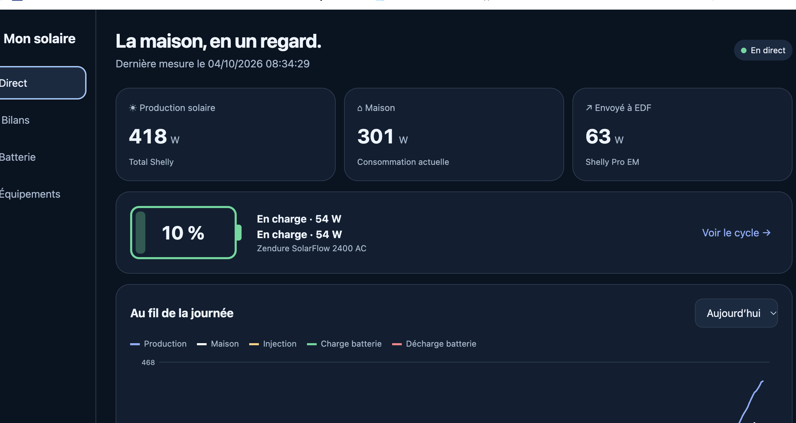
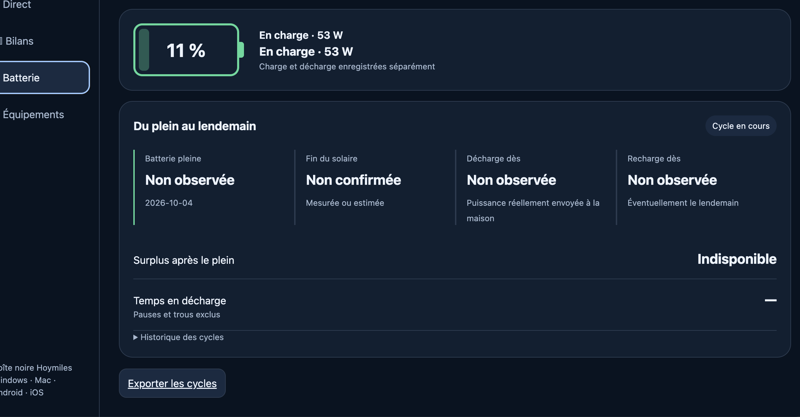

Suivi local DTU Pro-S
Lecture de la production PV par Wi-Fi direct ou Modbus TCP lorsque le DTU est relié en Ethernet direct ou via un pont Wi-Fi.
VERSION 7.0.62 · RASPBERRY PI · WINDOWS · macOS · ANDROID · iPHONE
Le Raspberry Pi est le collecteur recommandé : il réunit DTU Pro-S, Linky/Dinky, Shelly Pro EM et batterie Zendure en continu. La même interface est accessible depuis Android, iOS, macOS et Windows.
UNE VUE FIABLE DE L’INSTALLATION
Le logiciel rend lisibles les données qui comptent : production DTU, indication DDSU666, soutirage Linky/Dinky et flux réseau signé mesuré indépendamment par le Shelly.
Lecture de la production PV par Wi-Fi direct ou Modbus TCP lorsque le DTU est relié en Ethernet direct ou via un pont Wi-Fi.
Puissance instantanée et index heures pleines / heures creuses par Téléinfo.
Deux voies optionnelles pour comparer la production et mesurer l’achat ou l’injection au réseau.
Alerte temporisée, cumul Wh/kWh, journal CSV et résumé texte pour le support Hoymiles.
Production, consommation, injection et état des appareils depuis le Wi-Fi local ou à distance avec Tailscale.
Qualité et provenance des mesures, rapport mensuel PDF et comparaison indicative de quatre capacités de batterie.
DISPONIBLE SUR VOS ÉCRANS
Le Raspberry Pi est recommandé pour assurer la collecte et l’enregistrement permanent. Android et iPhone affichent la même interface depuis le navigateur, sur le Wi-Fi local ou à distance avec Tailscale. Windows et macOS restent possibles, mais un seul collecteur doit être actif à la fois.
Application complète, installation locale, historique et démarrage automatique facultatif.
Installateur autonome, sauvegarde des données avant mise à jour et fonctionnement sur le réseau local.
Collecteur permanent par service systemd, tableau web privé et accès Tailscale, sans ordinateur laissé allumé.
Interface dans Chrome, ajout possible à l’écran d’accueil. Aucune application de magasin nécessaire.
Interface dans Safari, ajout possible à l’écran d’accueil et accès privé avec Tailscale.
NOUVEAU · ALARMES DU SUIVI
Après cinq minutes sans mesure valide enregistrée, le logiciel affiche une alarme. Le tableau mobile ouvert signale aussi une perte de connexion, sur le Wi-Fi ou via Tailscale. Une production à 0 W pendant la nuit reste une mesure normale.
Pour être averti même ordinateur éteint ou téléphone verrouillé, configurez une notification extérieure par mail avec Healthchecks. Les interruptions et reprises sont enregistrées localement.
SUIVI DE PRODUCTION
Production PV, réseau DDSU, Linky/Dinky, deux voies Shelly et limite DTU possèdent leurs propres couleurs.

SECOND ENSEMBLE SOLAIRE · ESP32
Un second ensemble de panneaux, indépendant du DTU Pro-S principal, peut être suivi grâce à une liaison complémentaire ESP32. Le Raspberry rassemble ses données dans le même tableau privé.
Le routeur ESP32 apporte le Wi-Fi jusqu’au local technique. Le proxy ESP32 placé près des micro-onduleurs assure leur liaison Bluetooth. Le tableau indique séparément l’état des deux liaisons.
INSTALLATION WINDOWS, MAC ET RASPBERRY PI
Pour un suivi permanent, installez le collecteur sur Raspberry Pi : les ordinateurs et téléphones ouvrent ensuite son tableau privé.
INSTALLER_WINDOWS.vbs.1 - INSTALLER BOITE NOIRE HOYMILES.app et 2 - LIRE-MOI-MAC.txt. Faites un clic droit sur l’installateur puis choisissez Ouvrir.ANDROID, iOS, macOS, WINDOWS ET TAILSCALE
Le Raspberry Pi héberge le tableau privé. Ouvrez-le dans Chrome (Android), Safari (iPhone/iPad), Safari/Chrome (Mac) ou Edge/Chrome (Windows). Tailscale crée un accès privé et chiffré à distance.
8765. Ne lancez pas en parallèle la gestion solaire sur Mac ou Windows.http://IP_DU_RASPBERRY:8765/ sur le Wi-Fi local.http://IP_TAILSCALE_DU_RASPBERRY:8765/, puis ajoutez la page à l’écran d’accueil Android ou iPhone. Sur Raspberry, obtenez l’adresse avec tailscale ip -4. Aucun port de la box ni service public Funnel n’est nécessaire.Le tableau indique l’âge et la provenance de chaque mesure. N’ouvrez aucun port sur la box, n’utilisez pas Tailscale Funnel, activez la double authentification du compte Tailscale et protégez les ESP32 en WPA2/WPA3. Sur téléphone, Windscribe peut remplacer temporairement Tailscale : coupez Windscribe puis réactivez Tailscale si l’accès privé ne revient pas automatiquement.
SOUTENIR LE PROJET
Si cette application vous est utile et que vous souhaitez soutenir les heures de développement et de tests, un don est possible, sans aucune obligation.
Soutenir le projet via PayPalDTU + DINKY + SHELLY : DEUX OPTIONS RÉSEAU
Le Wi-Fi interne relie le PC à la box, au Dinky et au Shelly. Une seconde antenne Wi-Fi relie le PC au Wi-Fi propre du DTU.
Le DTU rejoint la box par un nano-routeur en mode Client/Pont ; Dinky et Shelly restent sur le même LAN. C’est l’unique configuration proposée sur Mac.
Le TP-Link TL-WR802N suffit largement pour le faible débit du DTU : mode Client/Pont, un port Ethernet et alimentation USB. Son prix se situe généralement autour de 25 à 35 €. Choisissez Client puis Smart IP (DHCP) afin de laisser la box attribuer les adresses.
Le TP-Link TL-WR902AC ajoute le Wi-Fi 5 GHz, mais il est plus cher et n’apporte aucun gain nécessaire au DTU. Il peut être choisi si le réseau 2,4 GHz est très encombré.
Ces modèles sont des suggestions techniques indépendantes : le projet n’est pas affilié à TP-Link et ne reçoit aucune commission.
BILAN EDF
Le calcul HP, HC et abonnement s’appuie sur les index Linky/Dinky, et non sur le DDSU.

QUESTIONS ESSENTIELLES
Non. Le zéro injection reste configuré et piloté par le DTU / S-Miles Cloud. L’application observe le Shelly, alerte après une injection durable, cumule les pertes en Wh/kWh et exporte les preuves.
Le DDSU est utile pour le système Hoymiles mais peut différer du compteur. Le Linky/Dinky est la référence retenue pour suivre les achats EDF.
Non. Les historiques, réglages et exports restent locaux sur votre ordinateur. GitHub sert uniquement à diffuser le logiciel.
Avec le DTU Hoymiles : Dinky seul pour les index Linky, Shelly Pro EM seul pour les mesures indépendantes, ou les deux ensemble. Le bouton Équipements permet d’activer les appareils utilisés et de renseigner leurs adresses. Après enregistrement, relancez le logiciel.
Courbes, bulles et cartes mobiles s’adaptent au choix. Un appareil en panne reste visible. Avec le Shelly seul, le bilan est une estimation sur les mesures enregistrées ; avec le Dinky, il utilise les index Linky. Les mesures réseau ne sont jamais additionnées.
Le tableau web Raspberry présente la production, la batterie, les équipements et les deux ESP32 : routeur Wi-Fi distant et proxy Bluetooth des micro-onduleurs du second ensemble de panneaux.
Windows ignore désormais les anciennes lignes de date invalides sans perdre l’historique batterie. La page Équipements affiche correctement le Shelly 2 comme connecté sur Windows et macOS dès qu’une mesure est reçue.
Le bouton de la nouvelle interface ouvre maintenant réellement le logiciel classique sur Windows et macOS. Les deux installateurs savent aussi configurer le Shelly EM Gen3 des nouveaux panneaux.
Le paquet Mac reste autonome, conserve ses autorisations Unix et refuse les résidus Windows avant publication.